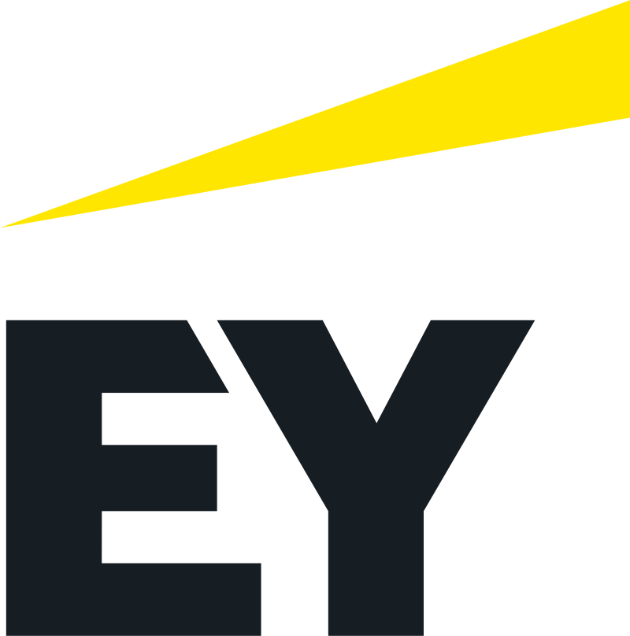

About
Biography
I am an AI Consultant (Forward Deployed Engineer) in the AI & Data practice of EY Consulting in Seoul, where I lead the design and build of supply-chain decision systems for enterprise clients: demand forecasting, ontology-based multi-agent systems and Databricks Genie agents that planners use every day. Before EY I spent three and a half years as an AI / Quant Researcher at Qraft Technologies, an AI hedge fund, building machine learning and deep learning models for investment. On its prop team managing SoftBank's capital I built the statistical-learning alpha pipeline and market-impact simulator for US equities; I then led the hedging-signal framework for FSITC's $200M Japan fund, an ensemble of ML, GNN and LSTM-autoencoder models, and built ML/DL regime models for multi-asset allocation at Korean and US institutions.
I hold an M.Sc. in Industrial Engineering from UNIST (Data Analytics Lab, advisor Prof. Sungil Kim), where I led the joint research with NAVER Maps on graph neural networks for incident-driven traffic congestion and published it as first author in Transportmetrica B. My current research, five papers under review at ICAIF 2026 including DiffGerber as first author, focuses on decision-focused portfolio optimisation and large language models in finance; I am also a co-author of four MARBLE 2026 papers on crypto perpetual futures.
I am a certified Palantir Foundry & AIP builder, a native Korean speaker and fully professionally proficient in English, having served as the dedicated interpreter for an Indonesian parliamentary delegation in 2019.
Work Experience

- Andar SCM decision system: leading the design and build of the Neo4j ontology-based multi-agent system, Databricks Genie agents and demand forecasting for inventory and replenishment.
- Multi Asset Team (Jul. 2024 ~ Jun. 2025): client regime signals for Samsung Securities, KB Securities and Simplify; QIS strategy clustering validated with global financial institutions.
- Long-Term Equity Team (Nov. 2021 ~ Jun. 2024): US equity long/short multi-factor alpha pipeline and trading simulator on the prop team managing SoftBank's capital; FSITC hedging framework for its $200M Japan fund (lead); LLM news-sentiment long/short; multi-agent risk reporting.
- Led the NAVER Maps joint research: GNN models predicting incident-driven traffic congestion (82% accuracy) and XAI analysis of the factors driving its propagation; advisor Prof. Sungil Kim.
Academic Background
- Thesis: Modelling Traffic Incident Impacts and Prediction of Incident-driven Congestion Propagation in a Large-Scale Road Network[thesis]
- Advisor: Prof. Sungil Kim, Data Analytics Lab. Committee: Prof. Sungil Kim, Prof. Sungahn Ko, Prof. Sang Jin Kweon.
- Coursework: Advanced Machine Learning, Deep Learning Theory, Statistical Learning Theory, Optimization Theory, Time Series, Statistical Programming.
- Coursework: Statistics for Economics and Management, Econometrics, Quantitative Analysis for Management, Python Programming, Statistical Methods, Introduction to Data Science.
Teaching
- Lecturer, AI Quant, EST Camp (sponsored by the Korean Government), Nov. ~ Dec. 2025, 36 students.
- Lecturer, AI for Agriculture, National IT Industry Promotion Agency (NIPA), Sep. ~ Nov. 2021, 35 students.
- Teaching Assistant, IE509 Advanced Quality Management (Prof. Sungil Kim), UNIST, Fall 2021.
- Teaching Assistant, MEC20005 Statistics for Management and Economics (Prof. Woosung Kim), Handong Global University, Fall 2018.
- Teaching Assistant, MEC30076 Personal Finance (Prof. Beom Ha Jee), Handong Global University, 2018.
Certifications and Languages
- Korean (native); English (full professional proficiency): selected as a Republic of Korea Air Force interpreter officer (2019); dedicated interpreter for an Indonesian parliamentary delegation (2019)[press]; daily collaboration with global financial institutions (2022 to 2025).
Skills
- Machine learning: Python, PyTorch, scikit-learn, NumPy / Numba, pandas, PySpark, NetworkX (PMFG / DBHT), graph neural networks, Transformer, portfolio optimisation (MVO, risk parity).
- LLMs and agents: LangChain, LangGraph, LLM agents and evaluation, RAG / GraphRAG.
- Data and platforms: SQL / Spark SQL, Databricks (Unity Catalog, Genie, Agent Bricks, Lakeview, Jobs), Palantir Foundry / AIP, Neo4j / Cypher, Snowflake, PostgreSQL, Redis, Airflow, Linux.